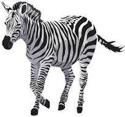
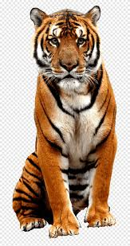
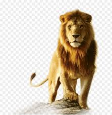
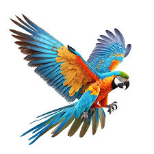

EDUCATION
Dear Zoo Visitors, make your visit to the zoo a special experience for young and old. Our varied and exciting offer offers you new insights into the world of animals, animal husbandry and the importance of zoos for nature conservation. In doing so, we pay attention to an age-appropriate and understandable communication of the topics. Here you will find all offers from guided tours and children's birthday parties to zoo rallies and quizzes to information on education for sustainable development. We look forward to seeing you! Contact guided tours Education Department Telephone: 49-1234567
HISTORY
The Royal Zoo is home to around 1,031 animals representing 205 species. In addition to visitor favourites like the giraffes, African elephants, lions, Humboldt penguins and koalas, the zoo focuses on keeping and breeding endangered animals and rarely displayed Asian animals. The Royal Zoo boasts an extensive collection of native and European small birds, the likes of which are rarely found in other zoos. Some of the birds have also been very successfully bred. In our location, visitors can find rarely displayed tree dwellers. These include brown woolly monkeys, southern tamanduas, Prevost’s squirrels and crowned lemurs, which are now only found in one other zoo in Germany, namely Erfurt Zoo.
OUR ANIMALS
Zebra
Zebras ( Hippotigris ) are a subgenus of the horse genus ( Equus ), which consists of three species: Grevy's zebra ( Equus grevyi ), mountain zebra ( Equus zebra ) and plains zebra ( Equus quagga ). The animals are particularly characterized by their black and white stripe pattern. All representatives of the zebra are found exclusively in Africa , where they mostly inhabit open landscapes. The populations of the individual species are threatened to varying degrees.
WikipediaRed Panda

The red pandas ( Ailurus ), also called red pandas or cat bears , are a genus of mammals that are native to the eastern Himalayas and southwestern China and feed mainly on bamboo . Originally, only one species, Ailurus fulgens, was assigned to the genus Ailurus . However, molecular genetic studies from 2020 show that the subspecies Styan's red panda, which was previously classified as such, should be granted species status (now Ailurus styani ) and the genus thus comprises two species. Contrary to previous assumptions in this direction, the genus is not closely related to the giant panda .
WekipidaBald Head Eagle

The bald eagle (Haliaeetus leucocephalus) is a bird of prey found in North America. A sea eagle, it has two known subspecies and forms a species pair with the white-tailed eagle (Haliaeetus albicilla), which occupies the same niche as the bald eagle in the Palearctic. Its range includes most of Canada and Alaska, all of the contiguous United States, and northern Mexico. It is found near large bodies of open water with an abundant food supply and old-growth trees for nesting.
wikipediaTiger
The tiger (Panthera tigris) is a large cat and a member of the genus Panthera native to Asia. It has a powerful, muscular body with a large head and paws, a long tail and orange fur with black, mostly vertical stripes. It is traditionally classified into nine recent subspecies, though some recognise only two subspecies, mainland Asian tigers and the island tigers of the Sunda Islands.
Wikipidialion
The lion (Panthera leo) is a large cat of the genus Panthera, native to Africa and India. It has a muscular, broad-chested body; a short, rounded head; round ears; and a dark, hairy tuft at the tip of its tail. It is sexually dimorphic; adult male lions are larger than females and have a prominent mane. It is a social species, forming groups called prides. A lion's pride consists of a few adult males, related females, and cubs. Groups of female lions usually hunt together, preying mostly on medium-sized and large ungulates. The lion is an apex and keystone predator.
wikipediaParrot
Parrots (Psittaciformes), also known as psittacines are birds with a strong curved beak, upright stance, and clawed feet.[a] They are classified in four families that contain roughly 410 species in 101 genera, found mostly in tropical and subtropical regions. The four families are the Psittaculidae (Old World parrots), Psittacidae (African and New World parrots), Cacatuoidea (cockatoos), and Strigopidae (New Zealand parrots).
wikipedia